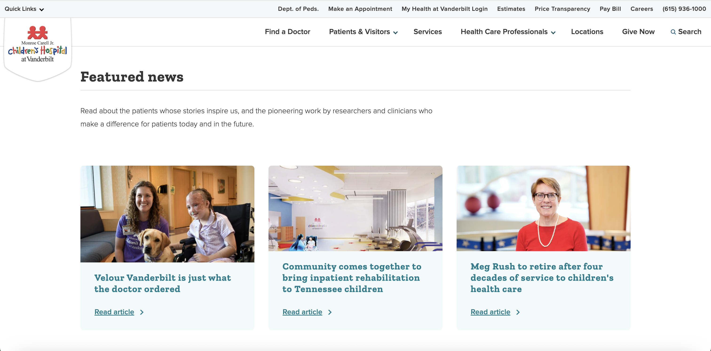

Role: Co-Lead Developer (2+ years)
Live Sites: vanderbilthealth.com | childrenshospitalvanderbilt.org | myhealthwalkin.com
Technologies: Drupal (Headless), React, Next.js, AWS Amplify, CloudSearch, S3, CloudFront, Jenkins, Yext, PHP, JavaScript, GitHub Actions
Inherited and completely modernized a complex 6-year-old headless Drupal ecosystem consisting of 3 frontends, a search app, component library, and extensive integrations. Transformed the outdated, cumbersome architecture into a modern, efficient system through comprehensive technical modernization initiatives.
Challenge: Six separate repositories created significant code duplication and maintenance overhead.
Solution: Consolidated Walk-In Clinic, Children's Hospital, Vanderbilt Health Search App, and Vanderbilt Health frontends into a single repository, reducing total repositories from 6 to 3 (50% reduction).
Challenge: Legacy hosting on deprecated Amazon Beanstalk required manual server management.
Solution: Migrated entire hosting infrastructure to AWS Amplify, eliminating server management needs and dramatically improving performance and load times for users.
Challenge: Outdated Next.js version with deprecated page router structure.
Solution: Updated to newest Next.js version and migrated to app router structure, requiring near-complete frontend refactor. This eliminated 6+ years of accumulated technical debt and brought the codebase into the modern era.
Custom Drupal Module: Created dynamic Drupal module for automated Yext integration, streamlining doctor data synchronization and overhauling the search experience while consolidating technical architecture.
Content Automation: Developed automated condition/treatment page generation from Staywell API, saving content editors countless hours while maintaining editorial control.
QA Innovation: Built innovative testing scripts including sitemap crawling for 200-response verification and HTML content matching between environments, helping catch bugs across thousands of pages.
Completed comprehensive retheme and redesign implementation of Vanderbilt Children's Hospital site, modernizing the user experience and bringing styles into the contemporary era.
This ecosystem represented an extremely vast and complex technical environment that had grown beyond its original scale without proper architectural planning. The accumulated technical debt from 6+ years of development created significant inefficiencies where simple tasks took hours due to system complexity.
Transformation Results: In just one year, successfully brought the entire project into the modern era, eliminating technical debt, improving developer experience, enhancing security, and creating a scalable foundation for future growth.

Interactive demonstration of Children's Hospital retheme and functionality
